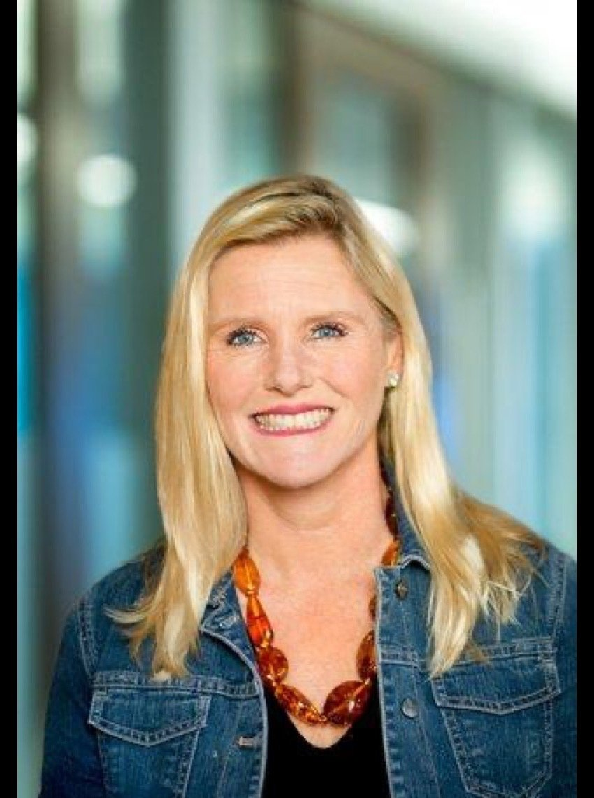

Executive Advisor | Fractional CHRO | Business Transformation & People Strategy Leader

Authentic Leader. Culture Architect. Strategic Growth Partner.
Marijke Woodruff is an award-winning Chief Human Resources Officer and business executive with more than 20 years of experience helping organizations accelerate growth, navigate transformation, and build high-performing cultures.
She partners with executive teams, private equity firms, founders, and Fortune 500 organizations to align people strategy with business strategy — turning organizational change into measurable business results.
Marijke has guided organizations through significant transformations and rapid scaling — helping global enterprises and high-growth startups alike turn people strategy into measurable business results, including scaling revenue from $100M to over $600M. Recognized as CHRO of the Year, she blends strategic foresight with executional discipline, thriving in high-ambiguity, high-impact environments.
Her experience spans Fortune 500, growth-stage, healthcare, media, professional services, education, and nonprofit organizations. She is known for combining strategic vision with hands-on execution, partnering with leaders to navigate complexity, build organizational capability, strengthen accountability, and ensure that investments in people translate into measurable business value.
Designing scalable organizations, operating models, and high-performance cultures that align talent, capabilities, and business strategy to accelerate growth.
Leading organizations through mergers, acquisitions, redesign, restructures, rapid growth, and enterprise-wide change while maintaining employee engagement and operational continuity.
Modernizing HR through AI, digital technology, data-driven decision making, and employee experience strategies that improve productivity, capability, and organizational effectiveness.
Developing executive leadership capabilities, succession strategies, competency models, and scalable learning ecosystems that strengthen organizational capability and leadership pipelines.
Serving as a trusted advisor to CEOs and executive teams by connecting business priorities, culture, operations, and workforce strategy to deliver measurable business outcomes and ROI.
Her approach goes beyond traditional HR consulting. She works at the intersection of business strategy, organizational transformation, operational excellence, and people leadership.
People strategies begin with the organization's priorities, customers, and growth goals — not HR processes.
Recommendations are translated into practical roadmaps, tools, and clear ownership — not just PowerPoint decks.
She works as an extension of the executive and leadership team — not as an outside consultant.
Change is operationalized with attention to leadership, communication, capability, and employee experience.
Success is measured through business performance, adoption, organizational capability, and ROI.